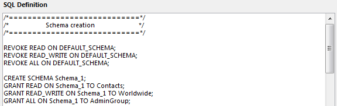

|
|
||||
4DPop sqlSchemas を使用して、SQL外部接続 (ODBC, SQL Pass trough, 4D for Flex, ...) の間に使用するSQLスキーマをグラフィカルに定義できます。スキーマはOn SQL Authenticationデータベースメソッドで適用されます。
ドキュメントで説明されているとおり、スキーマはシステムテーブルに格納されます : 4Dと4D SQLエンジン統合の原則
|
|
||||
4DPop sqlSchemas を使用して、SQL外部接続 (ODBC, SQL Pass trough, 4D for Flex, ...) の間に使用するSQLスキーマをグラフィカルに定義できます。スキーマはOn SQL Authenticationデータベースメソッドで適用されます。
ドキュメントで説明されているとおり、スキーマはシステムテーブルに格納されます : 4Dと4D SQLエンジン統合の原則
"4DPop sqlSchema.4dbase"フォルダまたはフォルダのエイリアスを、ストラクチャファイルと同階層の"Components"フォルダに配置します。

ダイアログを開くには"SC_Dial_Workshop"メソッドを実行します。
"4DPop"コンポーネントを使用している場合、sqlSchemaツールはパレットに表示されます。クリックすればダイアログが表示されます。

ダイアログからスキーマのCREATE、DROP、RENAMEができます。特定の4Dグループにアクセス権をGRANTまたはREVOKEできます。スキーマを定義したら、それをテーブルに適用できます。スキーマを完全に定義したら、SQl定義をテキストファイルに保存できます。それを後で再読み込みすることもできます。
| グループ | |
 |
ここには定位済みのグループが表示されます。グループはEDIT ACCESSコマンドで編集できます。.
スキーマでは2つの仮想グループ<EVERYBODY> と <NOBODY>も使用されます。
<EVERYBODY> は制限が適用されないことを意味します。<NOBODY>は誰もアクセスがないことを意味します (REVOKE コマンド)。 |
| スキーマ | |
| ここでスキーマを作成し、4Dグループのアクセス権を定義します。DEFAULT_SCHEMAをDROPしたりRENAMEしたりすることはできません。
READはグループのメンバが読み込みのみアクセスを持つことを意味します。 READ_WRITEはユーザが読み書きモードでアクセスできることを意味します。 ALLはユーザがストラクチャ定義 (Alter table, Create field, create indexs,...) にアクセスできることを意味します。 |
| テーブル | |
 |
ここでデータベースのテーブルにスキーマを適用します。 スキーマが割り当てられていないテーブルはすべてDEFAULT_SCHEMAに属します。 |
| プレビュー | |
|  |
テキストエリアに、スキーマ定義を反映したSQL文が表示されます。 |
| SC_Dial_Workshop : | スキーマ定義ダイアログを開く。 |
| SC_Get_Tables_from_SchemaID : | 指定したスキーマIDに属するテーブルをテキスト配列に返す。 |
| SC_Get_Tables_from_SchemaName : | 指定したスキーマ名に属するテーブルをテキスト配列に返す。 |
| SC_GroupExists : | 指定したグループが存在すればTrueを返す (仮想グループを含む)。 |
| SC_K_Default : | デフォルトスキーマ名を返す。 |
| SC_K_Everybody : | <EVERYBODY> 仮想グループ名を返す。 |
| SC_K_Nobody : | <NOBODY>仮想グループ名を返す。 |
| SC_Schema_Create : | スキーマを作成し、オプションでグループに権限を割り当てる。 |
| SC_Schema_Drop : | 指定したスキーマをDROPする。 |
| SC_Schema_Exists : | 指定したスキーマが存在すればTrueを返す。 |
| SC_Schema_Get_ID : | 指定したスキーマ名のIDを返す。 |
| SC_Schema_Rename : | 指定したスキーマの名称を変更する。* |
| SC_Schema_Right_Grant : | 指定したスキーマ用の指定したグループにアクセス権をGRANTする。 |
| SC_Schema_Right_Revoke : | 指定したスキーマにアクセス権をREVOKEする。 |
| SC_Schema_Rights_Grant : | 指定したスキーマにアクセス権をGRANTする。 |
| SC_Schemas_Load : | 参照配列にスキーマテーブルをロードする。 |
| SC_Schemas_Supported : | 4Dがスキーマをサポートする場合Trueを返す。 |
| SC_Table_Exists : | 指定したテーブルが存在すればTrueを返す。 |
| SC_Table_Get_Schema : | 指定したテーブルのスキーマ名を返す。 |
| SC_Table_Get_Schema_ID : | 指定したテーブルのスキーマIDを返す。 |
| SC_Table_Set_Schema_ID : | 指定したテーブルにスキーマを設定する。 |
| SC_Tables_Load : | 参照配列にテーブルをロードする。 |
このコンポーネントはコンパイル版で提供されますが、コンポーネントフォルダ内の"Sources" フォルダにはソースコードが含まれています。